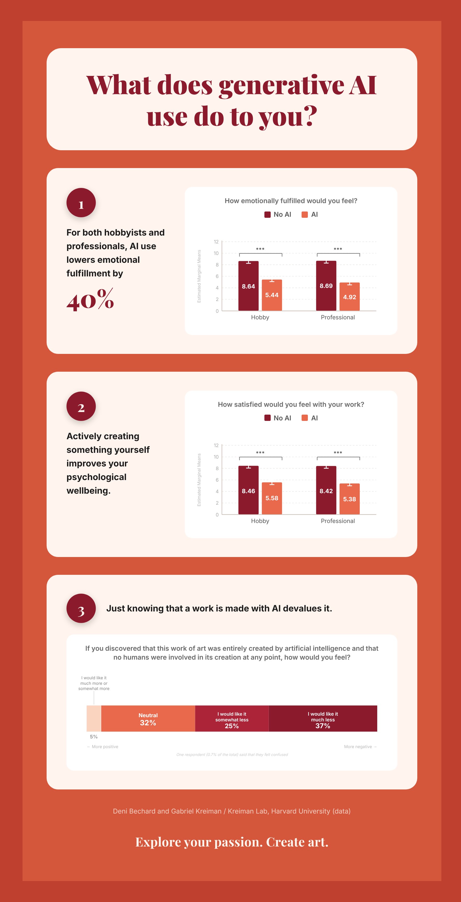

Research Process
Presentation
As the midterm for this course, we created a presentation to showcase our progress to others. Since my presentation, my focus and scope has shifted significantly.
Infographic
Towards the end of the course, we also created an infographic for our research, presenting it and its conclusions in a more marketable way.

Data Collection
Methodology
Within the questionnaire, administered via Qualtrics, each respondent would be separated randomly into 4 categories, a 2x2 between AI used versus no AI, and hobby versus professional. For each category, a scenario would be described, where the respondent imagines themself as either a hobbyist or professional illustrator, and either using AI or not using AI. To get approximately 50 respondents per category, 200 total responses were collected, and after reading each scenario, they would all answer the same questions. The scenarios focus on a single discipline to minimize outside influences, being illustration due to the impact of generative AI on it. Despite the narrower scenario description, conclusions drawn should be able to be applied more broadly, across anything that can be considered to contain the creative process, directing future research to observe those other disciplines. From this, effective comparisons could be made between each scenario, of working vs. nonworking, and AI vs. no AI. From each person, their self-described emotional, social, and cognitive fulfillment, along with general satisfaction was gauged on a 1-10 scale. Furthermore, various demographic data were collected, enabling more comparisons, such as gender and income.
Data
This section contains the raw data collected, and the questions asked, with private data omitted. Graphs and visualizations can be found within the paper.